01 / Business
유통 통합 관리
파워뱅크 제조사부터 총판, 대리점까지 이어지는 유통 구조를 하나의 B2B 웹 시스템에서 관리합니다.
주요 기능
발주·수주 현황, 재고, 거래명세서 관리와 관리자·총판·대리점별 권한 분리
기술
Vue 3 · Node.js / Express · PostgreSQL
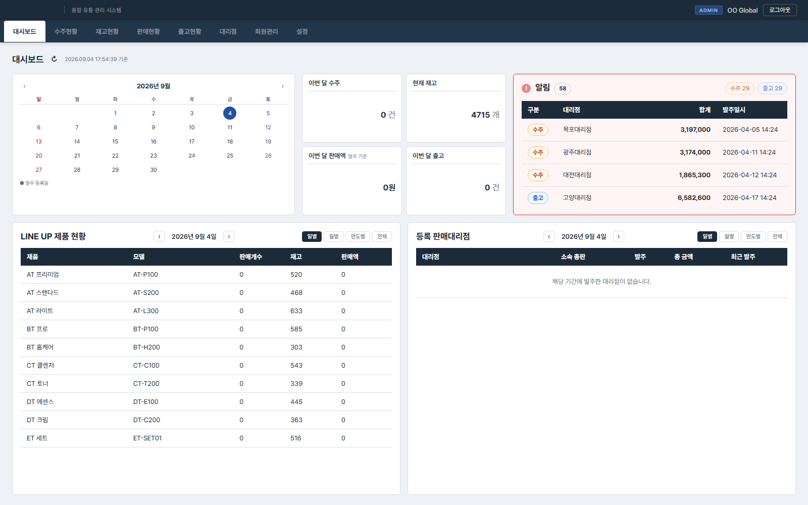
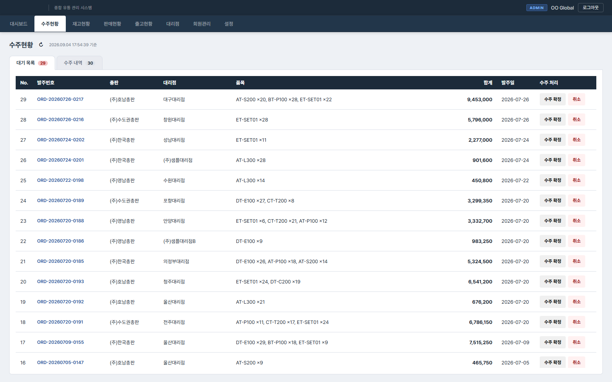
Project Readme
각 프로젝트의 목적, 주요 기능, 사용 기술을 한눈에 볼 수 있도록 정리했습니다. 화면 이미지를 보고 저장소에서 구현 내용을 확인할 수 있습니다.
01 / Business
파워뱅크 제조사부터 총판, 대리점까지 이어지는 유통 구조를 하나의 B2B 웹 시스템에서 관리합니다.
발주·수주 현황, 재고, 거래명세서 관리와 관리자·총판·대리점별 권한 분리
Vue 3 · Node.js / Express · PostgreSQL


02 / Platform
태양광 발전소의 발전량 조회와 회원, 청구, 게시판, 관리자 통계를 함께 다루는 Java 기반 웹 시스템입니다.
발전소별 실시간 발전량 조회, 관리자 통계, 회원 및 청구 업무 관리
Java · Spring · eGovFrame · MyBatis · MySQL / Oracle
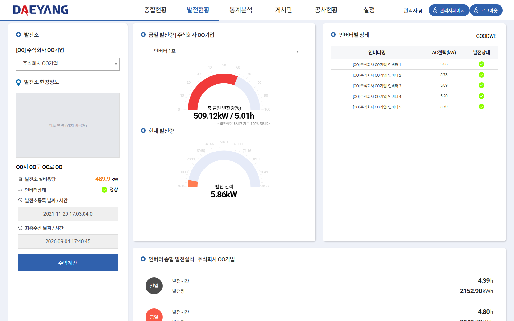
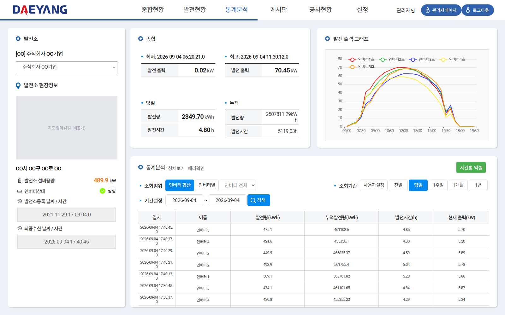
03 / Operations
태양광 발전소 매출에 대한 전자세금계산서를 발행하고 발행 이력을 관리하는 시스템입니다.
세금계산서 발행·이력 조회, 외부 발행 API 연동
Node.js / Express · MariaDB
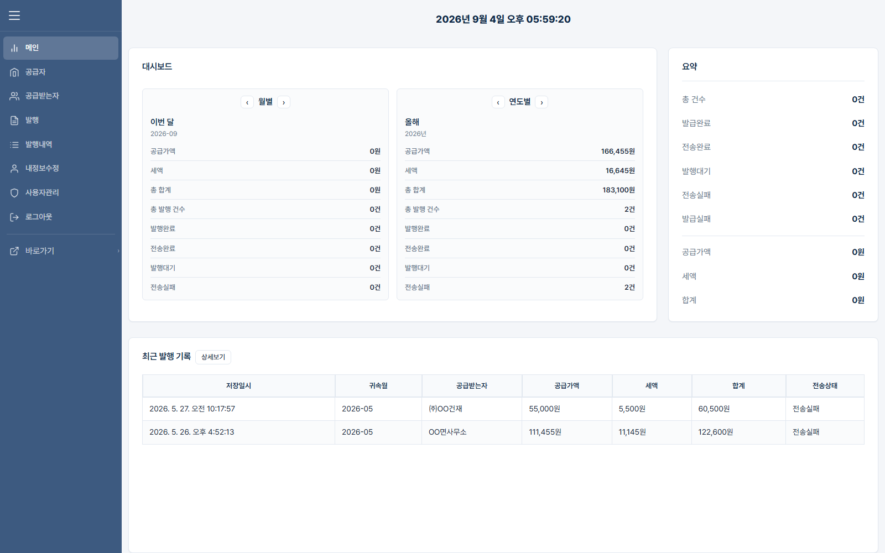
04 / Operations
태양광 발전소 인허가 절차의 일정을 캘린더 형태로 정리하고 관리하는 업무 도구입니다.
발전소 등록과 인허가 일정 확인 및 관리
Node.js / Express · MariaDB

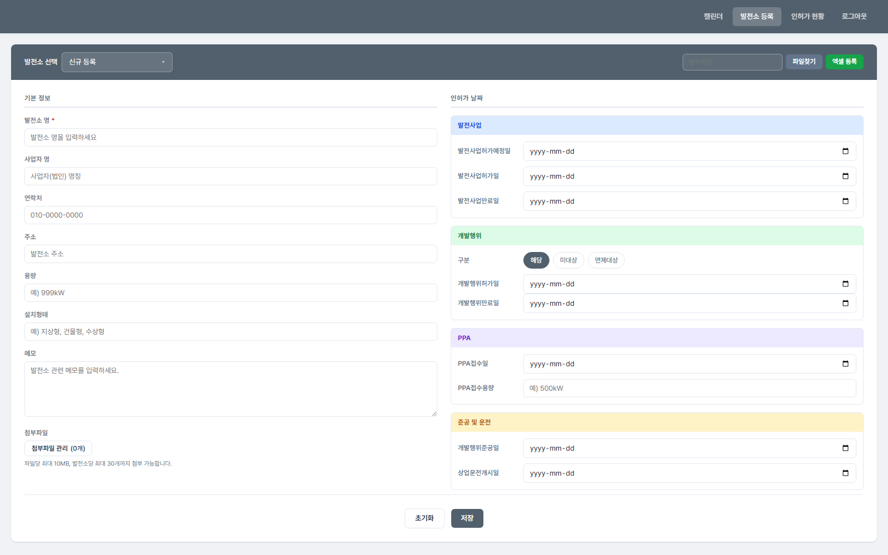
05 / Tooling
실제 태양광 인버터 장비가 없어도 RS485/Modbus 통신을 재현해 프로토콜을 시험할 수 있는 데스크톱 도구입니다.
인버터 연동 프로그램의 통신 동작을 장비 없이 확인
Python · PyQt5 · pyserial
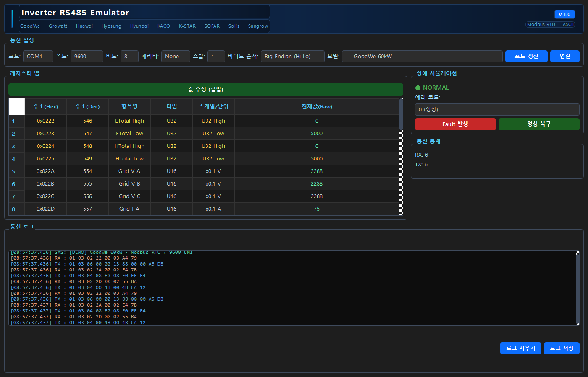
06 / SMHRD · 최우수상
청소년이 설문과 제보로 디지털 유해환경 데이터를 제공하고, 참여 보상과 분석 결과를 통해 꾸준한 참여 및 정책 활용을 돕는 플랫폼입니다.
청소년 설문·제보, 챌린지와 포인트 리워드, 포인트샵, 참여 통계 및 관리자 분석
데이터 분석, 서비스 기획 자료 및 이해관계자 시각화
Vue 3 · Pinia · Supabase · ECharts · PrimeVue
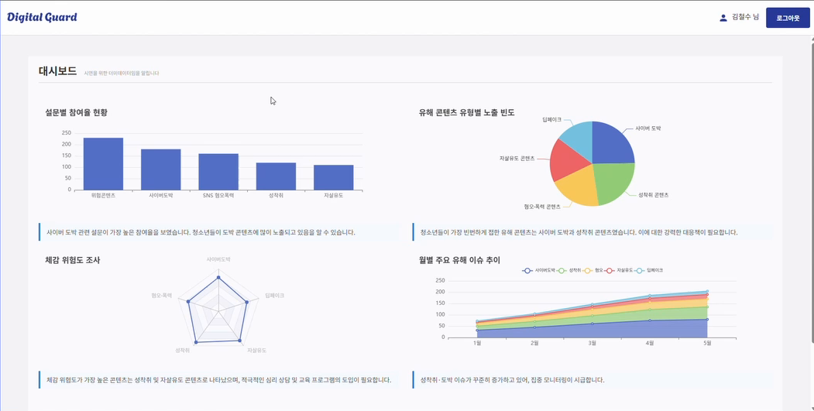
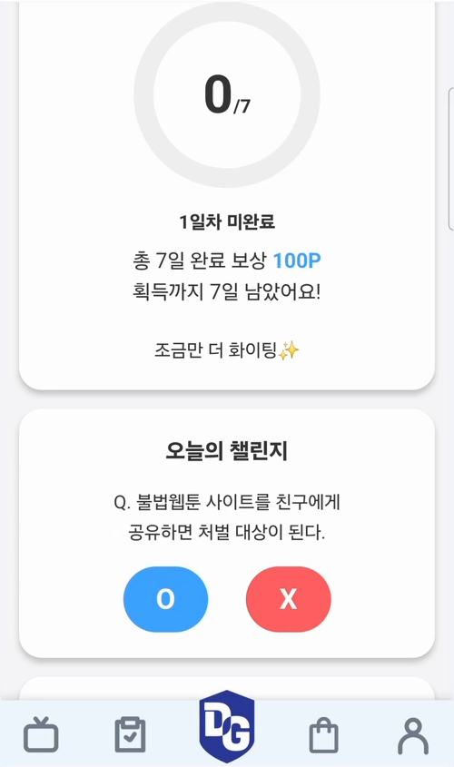
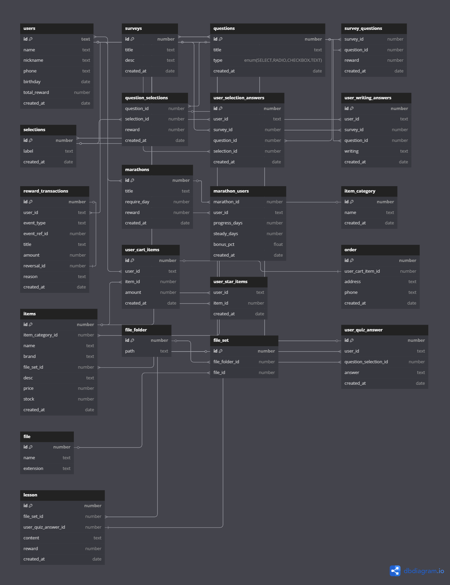
07 / SMHRD · 장려상
가족 간 실시간 음성 대화를 기록하고, 생성형 AI로 대화 요약과 디지털 자서전을 만들어 가족의 이야기를 이어가는 플랫폼입니다.
음성 기반 AI 대화, 대화 요약, 자서전 생성, 가족 구성원 및 타임라인 관리
AI 챗봇·대화 요약·자서전 생성 백엔드 및 프론트엔드 API 연동
Vue 3 · TypeScript · Spring Boot · PostgreSQL · JWT
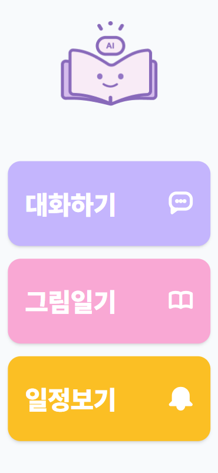


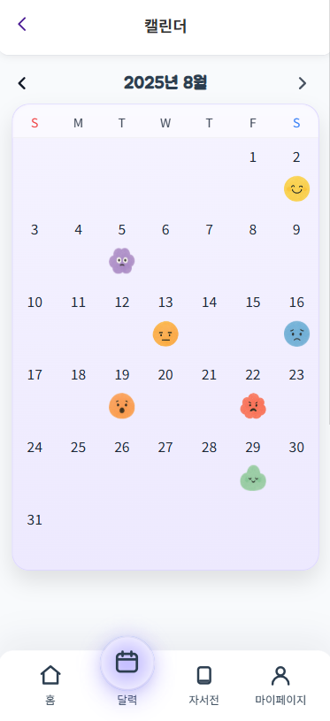